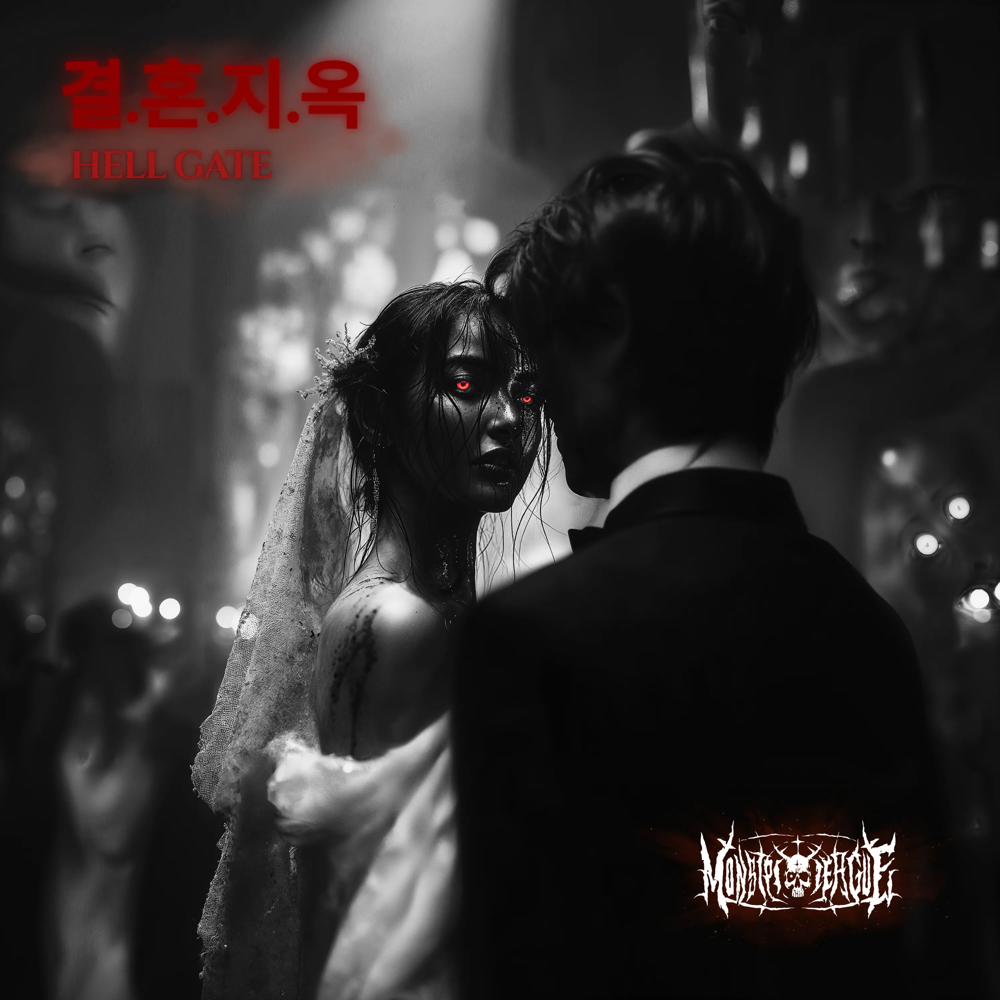
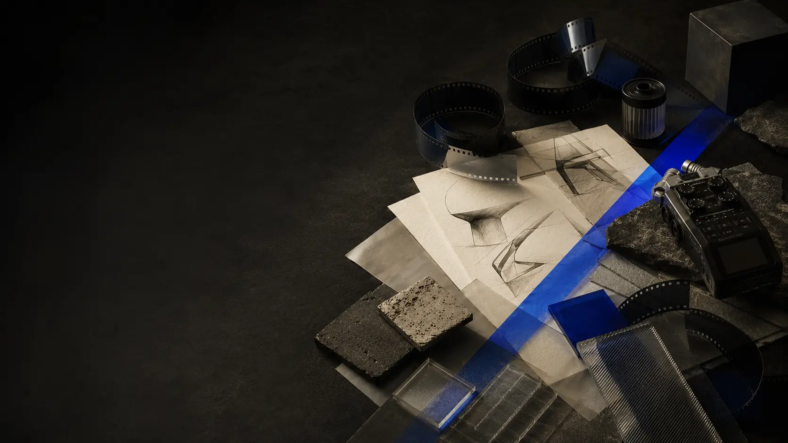
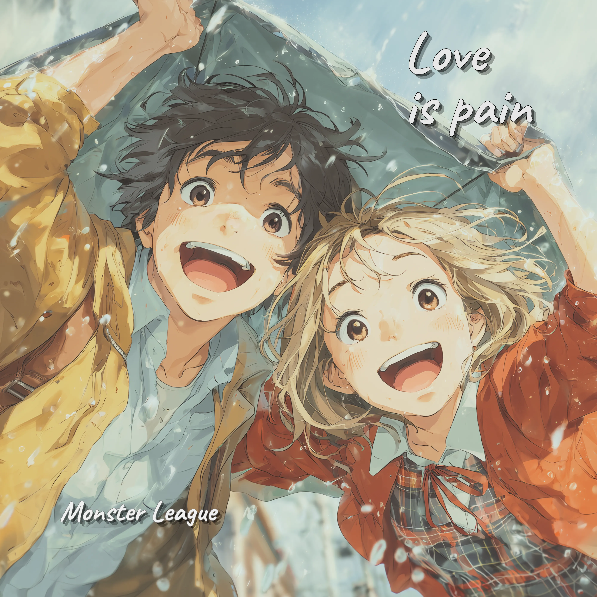
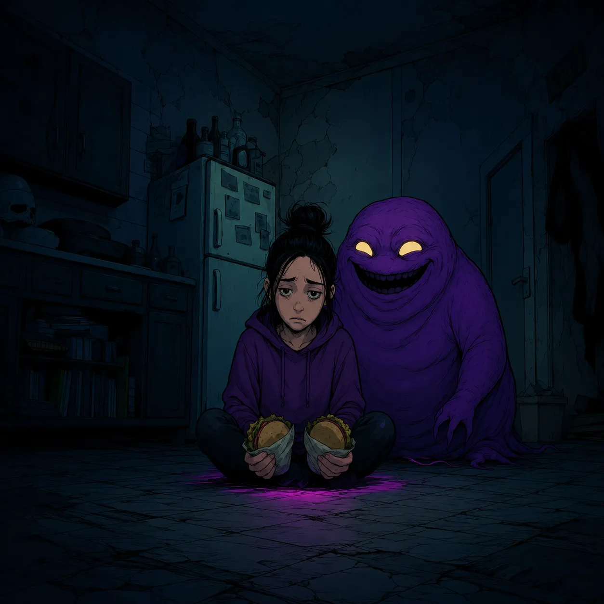
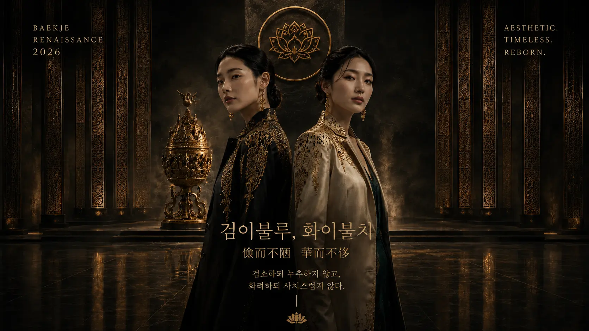
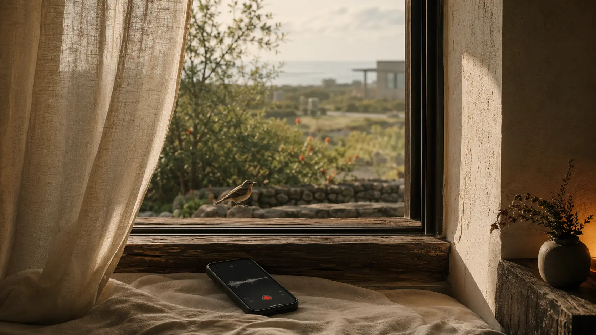
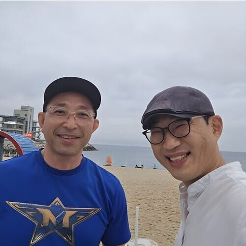
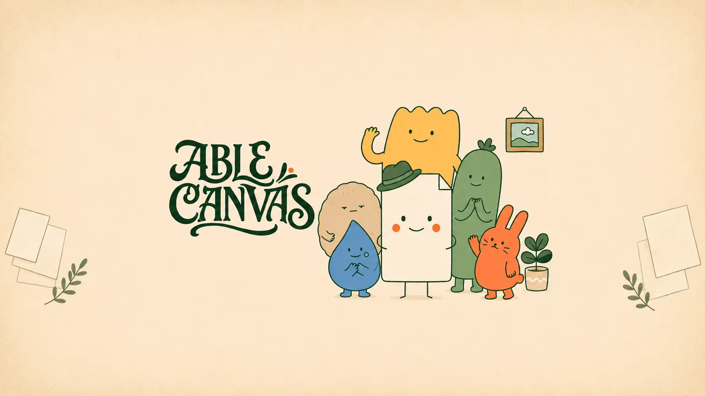
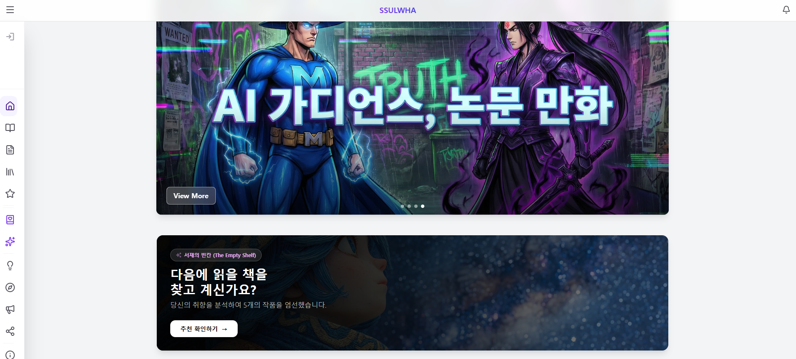
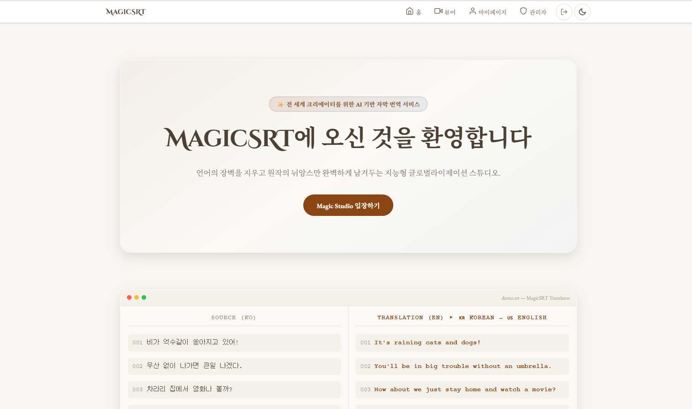

DIRECTOR
결혼지옥 · Hell Gate
Monster League 공식 뮤직비디오 Director.Official music video directed for Monster League.

영상, 음악, 지역의 이야기와 제품을 각각의 매체에 맞는 몸으로 만듭니다.Film, music, local stories, and products each take the body appropriate to their medium.
선택하기 전에는 영상 제공자와 연결하지 않습니다.The video provider is not contacted before your choice.

Monster League 공식 뮤직비디오 Director.Official music video directed for Monster League.

Monster League 공식 뮤직비디오 Director.Official music video directed for Monster League.

Werockenstein 공식 뮤직비디오 Director.Official music video directed for Werockenstein.
노래, 이미지, 역사와 웹페이지가 각각 메시지를 경험하게 하는 몸이 됩니다.Songs, images, history, and web pages each become bodies through which a message is experienced.

검소하되 누추하지 않고, 화려하되 사치스럽지 않다. 하나의 메시지를 이미지, 음악, 공간과 웹페이지라는 다양한 몸에 투영한 프로젝트이며, 웹페이지 자체도 메시지의 몸입니다.Simple without being shabby, splendid without being extravagant. One message is projected into image, music, space, and web page—the web page itself becoming a body of the message.

제주 호텔 정원에서 스마트폰으로 녹음한 새소리로 시작된 노래와 웹페이지입니다. 오래 만나지 못한 마음이 다시 들리는 경험을 음악, 이미지와 상호작용의 몸으로 만들었습니다.A song and web experience born from birds recorded on a smartphone in a Jeju hotel garden, giving returning memory a body through music, image, and interaction.
단발성 실험이 아니라 지속적인 제작과 축적으로 만든 AI 음악 아카이브입니다.An AI music archive built through sustained creation rather than a one-off experiment.

소상공인의 이야기를 AI 음악으로 바꾸는 지역 기반 프로젝트입니다.A local project that turns small-business stories into AI-assisted songs.
창작 세계관을 음악으로 압축한 기존 주제곡입니다. 재생을 요청하기 전에는 음원 제공자와 연결하지 않습니다.The existing theme song condenses the creative universe into music. The provider is not contacted before playback intent.
복잡한 과정을 이해 가능한 선택으로 바꾸고 사용자가 결과를 결정할 수 있게 합니다.They turn complex processes into understandable choices so users can determine the result.

새로운 가치를 만드는 사용자 중심 인쇄 쇼핑몰입니다. 복잡하고 공급자 중심이던 인쇄 주문을 사용자가 소재, 규격과 결과를 이해하며 선택할 수 있는 흐름으로 다시 설계했습니다.A user-centered print shop that creates new value by redesigning provider-centered ordering around understandable choices of material, format, and result.

창작자가 이야기와 이미지를 더 빠르게 펼칠 수 있도록 설계한 웹 기반 스토리 플랫폼입니다.A web storytelling platform designed to help creators publish stories and visuals faster.

동영상의 맥락을 읽고 60개국어로 번역하는 자막 번역 서비스입니다.A context-aware subtitle translation service for global video distribution in 60 languages.